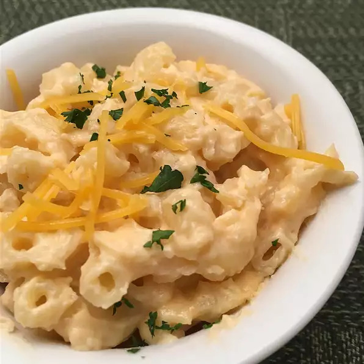

Mac-N-Cheese

Quick, easy, and tasty macaroni and cheese dish!
Mac and cheese is a dish of cooked macaroni pasta and a cheese sauce, most commonly cheddar. It can also incorporate other ingredients, such as breadcrumbs or meat.
This is a simple and quick recipe uses staple ingredients and comes together in just 25 minutes!
Ingredients:
- Elbow Macaroni
- Butter
- Flour
- Milk
- Cheddar Cheese
Steps:
- Bring a pot of water to a boil. Cook elbow macaroni until al dente, about 8 minutes.
- To make the roux, start by melting butter in a saucepan over medium heat. Add flour, salt, and pepper and stir until smooth. Slowly pour in milk and stir until the mixture is smooth and bubbling. Be careful to not let the milk burn.
- Slowly stir in Cheddar cheese until smooth and melted. We recommend you grate your own cheese because pre-shredded cheese won't incorporate into the mixture as well as block cheese.
- Once the macaroni is finished cooking, drain and stir into cheese sauce until coated.
Home